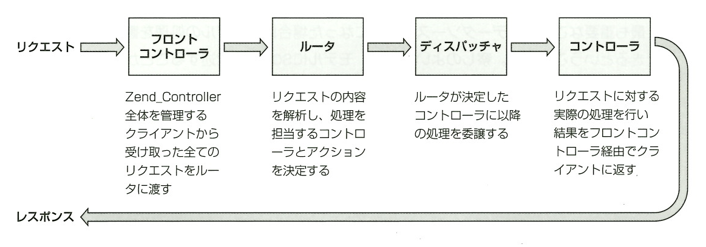
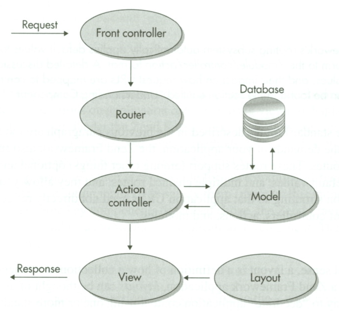
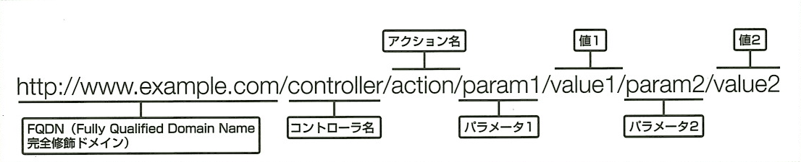
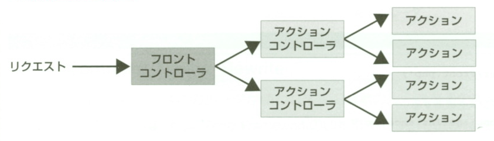

├ application ……………………………………アプリケーションディレクトリ
│├ controllers ……………………………コントローラディレクトリ
││├ IndexController.php ……………………………………アクションコントローラ
││└ ErrorController.php ……………………………………アクションコントローラ
│├ models ……………………………モデルディレクトリ
││├ aclModel.php ……………………………………モデル
││└ userModel.php ……………………………………モデル
│└ views ……………………………ビューディレクトリ
│ └ scripts ……………………………………ビュースクリプトディレクトリ
│ ├ index ………………………………コントローラ名
│ │└ index.phtml ……………………………………ビュースクリプト（アクション名＋.phtml）
│ └ error ………………………………コントローラ名
│ └ error.phtml ……………………………………ビュースクリプト（アクション名＋.phtml）
└ html ……………………………………公開ディレクトリ
├ .htaccess ……………………………………すべてのリクエストを index.php に渡す設定
└ index.php ……………………………………フロントコントローラ
Zend_Controller－コントローラ
Zend_Controller の構造
Zend_Controller は、Zend Framework の中で、ＭＶＣモデルを実現しているコンポーネントです。
Zend Framework は、ＭＶＣモデルを使わずに各コンポーネントをライブラリのように単体で扱うこともできますが、
ＭＶＣモデルを使用するなら、Zend_Controller を理解することは必須事項です。
Zend_Controller は、多数のサブコンポーネントから構成されています。
Zend_Controller をはじめとするコンポーネント群は小さな部品で構成されており、
拡張性と柔軟性に富み、同時に高速な動作を実現しています。
| コントローラ名 | 役割 |
|---|---|
| フロントコントローラ | 全リクエストを受け付け、処理を各機能に依頼し、レスポンスを返す |
| ルータ | リクエスト内容から処理の手順を決める |
| ディスパッチャ | 処理を担当するアクションコントローラを決め、アクションコントローラを呼び出す |
| アクションコントローラ | 実際の処理を行うビジネスロジックと呼ばれる部分 |
| リクエストオブジェクト | リクエストされた全ての情報を管理する |
| レスポンスオブジェクト | レスポンスする全ての助補を管理する |
| アクションヘルパー | アクションコントローラに機能を追加する |
| プラグイン | イベント発生時の処理を追加する |
ブートストラップ・アーキテクチャ
Zend Framework のブートストラップ・アーキテクチャを図式化すると、下図の様になります。
Zend Framework のブートストラップ・アーキテクチャ
 
標準的なディレクトリ構成
Zend_Controller を使用する際には、まずＭＶＣモデルに対応したディレクトリ構成にする必要があります。 下図に標準的なディレクトリ構成を示します。
標準的なディレクトリ構成
アクセス方法
通常はブラウザからアクセスするにはＰＨＰスクリプトのファイル名を指定しますが、 Zend Framework ではブラウザからアクセスする際のＵＲＬの書式も厳格なルールがあります。
Zend Framework のＵＲＬ形式

例えば「http://www.example.com」の場合、
FQDN に続いてコントローラ名とアクション名を指定します。
アクションにパラメータを渡したい場合には、アクション名に続けて「名前/値」のペアで記述します。
パラメータはいくつでも指定可能です。
「Hoge」コントローラの「piyo」アクションを指定するには、以下の様なＵＲＬ記述になります。
http://www.example.com/hoge/piyo
フロントコントローラ
ＭＶＣモデルでも、いくつかの種類が存在します。
その中でも ZendFramework では「フロントコントローラ方式」を採用しています。
フロントコントローラ方式とは、外部との出入り口を１つにし、必ずそこを通過させる方式のことで、
公開ディレクトリ上に置かれるＰＨＰスクリプトは、このファイルのみになります。
この外部との橋渡し役になるプログラムファイルのことを「フロントコントローラ」と呼ぶ。
フロントコントローラは、単に橋渡しという役割にとどまらず、システム全体のコントロールも行う。
フロントコントローラについて．以下に図式化して説明します。
外部からのリクエスト

外部からのリクエスト時は、まずフロントコントローラが受け取り、 リクエスト内容を解析して担当アクションコントローラへ渡す。
次に、アクションコントローラがリクエスト内容を解析して担当アクションへ渡します。 実際に処理を行うのは、アクションです。
アクションコントローラ
アクションコントローラは、実際の処理を記述するプログラムファイルです。
アクションコントローラは、フロントコントローラからコールされます。
役割としては、実際にアプリケーションのメイン処理を担当するもので、
いわゆる「ビジネスロジック」とあたるものです。
アクションコントローラの構造
アクションコントローラは、Zend_Controller_Action コンポーネントを継承した１つのクラス定義です。
このクラスの中には、実際に処理を行うアクションがメソッドとして記述されます。
| メソッド | 必須 | 概要 |
|---|---|---|
| init() | コントローラの初期化を行うメソッド。アクションが呼ばれる前に必ず実行される。 | |
| xxxxxAction() | ○ | アクションの実体。「xxxxx」の部分はアクション名により異なる。 |
| preDispatch() | アクションが呼ばれる直前んい実行される。init() の実行よりは後。 | |
| postDispatch() | アクションの処理が終了した直後に実行される。 |
アクションコントローラの設置場所は、「controllers」ディレクトリ内です（標準的なディレクトリ構成では「application/controllers」）。
システム内に１つ以上存在します。
ファイル名は、クラス名と同一にしなければなりません。クラス名やアクションメソッド名には、命名規則がありますので注意して下さい。
| 対象 | 例 | 規則 |
|---|---|---|
| クラス名 | IndexController | 「Index」の部分は任意、「Controller」は定型。頭文字は大文字。 |
| ファイル名 | IndexController.php | クラス名と同一にする。 |
| メソッド名 | piyoAction | 「piyo」の部分は任意、「Action」は定型。「camelCase」形式で命名。 |
基本的なアクションコントローラ
基本的なアクションコントローラの構成は、「初期化メソッド」と複数の「アクション」で構成されます。
基本的なサンプルを下図で説明します。
Hoge コントローラ （/application/controllers/HogeController.php）
- <?php
- // コンポーネントをロードする
- require_once 'Zend/Controller/Action.php';
- class HogeController extends Zend_Controller_Action
- {
- /**
- * 初期化メソッド
- */
- public function init ( )
- {
- /* ここに初期化処理ロジックを記述します。 */
- }
- /**
- * index アクション
- */
- public function indexAction ( )
- {
- // ここに処理ロジックを記述します
- }
- /**
- * piyo アクション
- */
- public function piyoAction ( )
- {
- // ここに処理ロジックを記述します
- }
- }
ビュースクリプト
ビュースクリプトは、ブラウザに表示させる画面（HTML）を記述したスクリプトファイルで、
ＭＶＣモデルの中の「Ｖ(View)」を担当する部分です。
ビュースクリプトの処理は。「Zend_View」が担当するものですが、
デフォルト設定では、自動的にビュースクリプトが起動されるようになっています（自動レンダリングモードが有効）。
ビュースクリプトを使用する場合（自動レンダリングモードが有効）
ビュースクリプトは、１アクションにつき１ファイル必要です。
ファイル名は、アクション名と同等で、拡張子は「.phtm」になります。
「views/scripts」ディレクトリ内にコントローラ名のディレクトリを作成し、その中にビュースクリプトファイルを設置します。
アクションの処理終了時に、自動的にビュースクリプトが実行されます。
piyo アクションのビュースクリプト （/application/views/scripts/hoge/piyo.phtml）
- <html>
- <head>
- <meta http-equiv="Content-Type" content="text/html; charset=UTF-8" />
- <title>Zend_Controllerサンプル</title>
- </head>
- <body>
- このファイルは「Hogeコントローラ」の「piyoアクション」のビュースクリプトです。
- </body>
- </html>
リクエストオブジェクト
リクエストオブジェクトとは、
レスポンスオブジェクト
レスポンスオブジェクトとは、
コントローラチェーン
コントローラチェーンとは、
更新情報